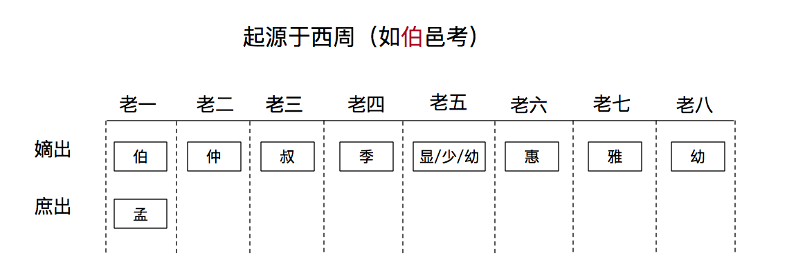

|
|
☰ 目录
伯仲叔季 司马八达，伯仲叔季，显惠雅幼， 不过按照马氏五常来看，直接就是伯仲叔季幼， 所以我感觉应该是前四个固定，最后一个是幼，中间不固定。 其实三国里很多人都是类似的： 马孟起，曹孟德（孟与伯类似，都是长子，妻生妾生的不同）孙伯符，孙仲谋，孙叔弼，孙季佐 一般为此三种：少、幼、五。 西周最早是叫孟仲叔季，后来出现了庶长子这个东西，而大贵族嫡长子往往有机会担任王畿十几个宫伯之一，于是春秋就改为伯仲叔季，庶长子才用孟。伯邑考是因为他真的是伯爵，姬昌升官去商首都做官，他的伯也就要有个替代者 武王同母兄弟只有周公旦和卫康叔 没有，伯仲叔季，伯最长，季最小，中间不管多少人，都可称仲叔。 武王同母兄弟十人，……其长子曰伯邑考，次曰武王发，次曰管叔鲜，次曰周公旦，次曰蔡叔度，次曰曹叔振铎，次曰成叔武，次曰霍叔处，次曰康叔封，次曰冉季载。冉季载最少。叔旦就是周公旦。 首先这是字， 是在成年之后给的，说前面排完了的后面又冒出来的一个少。 一般情况是： 兄弟一个： 随便了， 兄弟两个： 伯、叔 兄弟三个： 伯、仲、叔 兄弟四个：伯仲叔季 超出四个： 伯、仲、叔、叔、叔、。。。。、季， 老大为伯， 老小为季， 其它可称叔， 仲可有可无。 如果长子是嫡出： 伯， 长子是庶出： 孟； 没有硬性规定，先秦成活率不怎么高，有四兄弟都不得了了，通常不怎么考虑第五个。 实在需要用第五个的情况下，就只好自己往里面塞字，常见的有“少”（ 《春秋命历序》：“皇伯、皇仲、皇叔、皇季、皇少，五姓同期，俱驾龙，号曰五龙”。 ）“幼”（马谡是老五，字幼常）等。 没听说过，不过碰巧见过三国司马防八个儿子‘’司马八达“的字是这样的： 1.司马朗，字伯达； 2.司马懿，字仲达，大家都知道； 3.司马孚，字叔达； 4.司马馗，字季达； 5.司马恂，字显达； 6.司马进，字惠达； 7.司马通，字雅达； 8.司马敏，字幼达。 后面的就看不出规矩了。 |